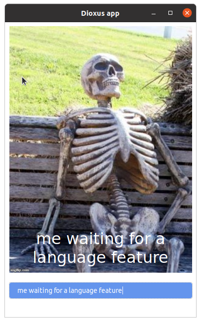
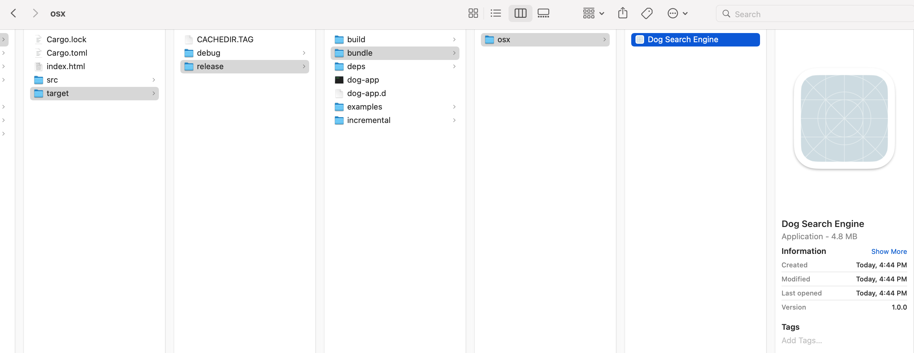

Introduction

Dioxus is a portable, performant, and ergonomic framework for building cross-platform user interfaces in Rust. This guide will help you get started with writing Dioxus apps for the Web, Desktop, Mobile, and more.
#![allow(unused)] fn main() { fn app(cx: Scope) -> Element { let mut count = use_state(cx, || 0); cx.render(rsx!( h1 { "High-Five counter: {count}" } button { onclick: move |_| count += 1, "Up high!" } button { onclick: move |_| count -= 1, "Down low!" } )) } }
Dioxus is heavily inspired by React. If you know React, getting started with Dioxus will be a breeze.
This guide assumes you already know some Rust! If not, we recommend reading the book to learn Rust first.
Features
- Desktop apps running natively (no Electron!) in less than 10 lines of code.
- Incredibly ergonomic and powerful state management.
- Comprehensive inline documentation – hover and guides for all HTML elements, listeners, and events.
- Extremely memory efficient – 0 global allocations for steady-state components.
- Multi-channel asynchronous scheduler for first-class async support.
- And more! Read the full release post.
Multiplatform
Dioxus is a portable toolkit, meaning the Core implementation can run anywhere with no platform-dependent linking. Unlike many other Rust frontend toolkits, Dioxus is not intrinsically linked to WebSys. In fact, every element and event listener can be swapped out at compile time. By default, Dioxus ships with the html feature enabled, but this can be disabled depending on your target renderer.
Right now, we have several 1st-party renderers:
- WebSys (for WASM): Great support
- Tao/Tokio (for Desktop apps): Good support
- Tao/Tokio (for Mobile apps): Poor support
- SSR (for generating static markup)
- TUI/Rink (for terminal-based apps): Experimental
Stability
Dioxus has not reached a stable release yet.
Web: Since the web is a fairly mature platform, we expect there to be very little API churn for web-based features.
Desktop: APIs will likely be in flux as we figure out better patterns than our ElectronJS counterpart.
SSR: We don't expect the SSR API to change drastically in the future.
Getting Started
This section will help you set up your Dioxus project!
Prerequisites
An Editor
Dioxus integrates very well with the Rust-Analyzer LSP plugin which will provide appropriate syntax highlighting, code navigation, folding, and more.
Rust
Head over to https://rust-lang.org and install the Rust compiler.
We strongly recommend going through the official Rust book completely. However, we hope that a Dioxus app can serve as a great first Rust project. With Dioxus, you'll learn about:
- Error handling
- Structs, Functions, Enums
- Closures
- Macros
We've put a lot of care into making Dioxus syntax familiar and easy to understand, so you won't need deep knowledge of async, lifetimes, or smart pointers until you start building complex Dioxus apps.
Setup Guides
Dioxus supports multiple platforms. Choose the platform you want to target below to get platform-specific setup instructions:
- Web: runs in the browser through WebAssembly
- Server Side Rendering: renders to HTML text on the server
- Liveview: runs on the server, renders in the browser using WebSockets
- Desktop: runs in a web view on desktop
- Mobile: runs in a web view on mobile
- Terminal UI: renders text-based graphics in the terminal
Desktop Overview
Build a standalone native desktop app that looks and feels the same across operating systems.
Apps built with Dioxus are typically <5mb in size and use existing system resources, so they won't hog extreme amounts of RAM or memory.
Examples:

Support
The desktop is a powerful target for Dioxus but is currently limited in capability when compared to the Web platform. Currently, desktop apps are rendered with the platform's WebView library, but your Rust code is running natively on a native thread. This means that browser APIs are not available, so rendering WebGL, Canvas, etc is not as easy as the Web. However, native system APIs are accessible, so streaming, WebSockets, filesystem, etc are all viable APIs. In the future, we plan to move to a custom web renderer-based DOM renderer with WGPU integrations.
Dioxus Desktop is built off Tauri. Right now there aren't any Dioxus abstractions over keyboard shortcuts, menubar, handling, etc, so you'll want to leverage Tauri – mostly Wry and Tao) directly.
Getting started
Platform-Specific Dependencies
Dioxus desktop renders through a web view. Depending on your platform, you might need to install some dependancies.
Windows
Windows Desktop apps depend on WebView2 – a library that should be installed in all modern Windows distributions. If you have Edge installed, then Dioxus will work fine. If you don't have Webview2, then you can install it through Microsoft. MS provides 3 options:
- A tiny "evergreen" bootstrapper that fetches an installer from Microsoft's CDN
- A tiny installer that fetches Webview2 from Microsoft's CDN
- A statically linked version of Webview2 in your final binary for offline users
For development purposes, use Option 1.
Linux
Webview Linux apps require WebkitGtk. When distributing, this can be part of your dependency tree in your .rpm or .deb. However, likely, your users will already have WebkitGtk.
sudo apt install libwebkit2gtk-4.0-dev libgtk-3-dev libappindicator3-dev
When using Debian/bullseye libappindicator3-dev is no longer available but replaced by libayatana-appindicator3-dev.
# on Debian/bullseye use:
sudo apt install libwebkit2gtk-4.0-dev libgtk-3-dev libayatana-appindicator3-dev
If you run into issues, make sure you have all the basics installed, as outlined in the Tauri docs.
MacOS
Currently – everything for macOS is built right in! However, you might run into an issue if you're using nightly Rust due to some permissions issues in our Tao dependency (which have been resolved but not published).
Creating a Project
Create a new crate:
cargo new --bin demo
cd demo
Add Dioxus and the desktop renderer as dependencies (this will edit your Cargo.toml):
cargo add dioxus
cargo add dioxus-desktop
Edit your main.rs:
#![allow(non_snake_case)] // import the prelude to get access to the `rsx!` macro and the `Scope` and `Element` types use dioxus::prelude::*; fn main() { // launch the dioxus app in a webview dioxus_desktop::launch(App); } // define a component that renders a div with the text "Hello, world!" fn App(cx: Scope) -> Element { cx.render(rsx! { div { "Hello, world!" } }) }
Web
Build single-page applications that run in the browser with Dioxus. To run on the Web, your app must be compiled to WebAssembly and depend on the dioxus and dioxus-web crates.
A build of Dioxus for the web will be roughly equivalent to the size of a React build (70kb vs 65kb) but it will load significantly faster because WebAssembly can be compiled as it is streamed.
Examples:

Note: Because of the limitations of Wasm, not every crate will work with your web apps, so you'll need to make sure that your crates work without native system calls (timers, IO, etc).
Support
The Web is the best-supported target platform for Dioxus.
- Because your app will be compiled to WASM you have access to browser APIs through wasm-bingen.
- Dioxus provides hydration to resume apps that are rendered on the server. See the hydration example for more details.
Tooling
To develop your Dioxus app for the web, you'll need a tool to build and serve your assets. We recommend using dioxus-cli which includes a build system, Wasm optimization, a dev server, and support hot reloading:
cargo install dioxus-cli
Make sure the wasm32-unknown-unknown target for rust is installed:
rustup target add wasm32-unknown-unknown
Creating a Project
Create a new crate:
cargo new --bin demo
cd demo
Add Dioxus and the web renderer as dependencies (this will edit your Cargo.toml):
cargo add dioxus
cargo add dioxus-web
Edit your main.rs:
#![allow(non_snake_case)] // import the prelude to get access to the `rsx!` macro and the `Scope` and `Element` types use dioxus::prelude::*; fn main() { // launch the web app dioxus_web::launch(App); } // create a component that renders a div with the text "Hello, world!" fn App(cx: Scope) -> Element { cx.render(rsx! { div { "Hello, world!" } }) }
And to serve our app:
dioxus serve
Setting Up Hot Reload
- Hot reloading allows much faster iteration times inside of rsx calls by interpreting them and streaming the edits.
- It is useful when changing the styling/layout of a program, but will not help with changing the logic of a program.
- Currently the cli only implements hot reloading for the web renderer.
Setup
Install dioxus-cli. Hot reloading is automatically enabled when using the web renderer on debug builds.
Usage
- run:
dioxus serve --hot-reload
- change some code within a rsx macro
- open your localhost in a browser
- save and watch the style change without recompiling
Limitations
- The interpreter can only use expressions that existed on the last full recompile. If you introduce a new variable or expression to the rsx call, it will trigger a full recompile to capture the expression.
- Components and Iterators can contain arbitrary rust code and will trigger a full recompile when changed.
Server-Side Rendering
The Dioxus VirtualDom can be rendered server-side.
Multithreaded Support
The Dioxus VirtualDom, sadly, is not currently Send. Internally, we use quite a bit of interior mutability which is not thread-safe. This means you can't easily use Dioxus with most web frameworks like Tide, Rocket, Axum, etc.
To solve this, you'll want to spawn a VirtualDom on its own thread and communicate with it via channels.
When working with web frameworks that require Send, it is possible to render a VirtualDom immediately to a String – but you cannot hold the VirtualDom across an await point. For retained-state SSR (essentially LiveView), you'll need to create a pool of VirtualDoms.
Setup
For this guide, we're going to show how to use Dioxus SSR with Axum.
Make sure you have Rust and Cargo installed, and then create a new project:
cargo new --bin demo
cd app
Add Dioxus and the ssr renderer as dependencies:
cargo add dioxus
cargo add dioxus-ssr
Next, add all the Axum dependencies. This will be different if you're using a different Web Framework
cargo add tokio --features full
cargo add axum
Your dependencies should look roughly like this:
[dependencies]
axum = "0.4.5"
dioxus = { version = "*" }
dioxus-ssr = { version = "*" }
tokio = { version = "1.15.0", features = ["full"] }
Now, set up your Axum app to respond on an endpoint.
use axum::{response::Html, routing::get, Router}; use dioxus::prelude::*; #[tokio::main] async fn main() { let addr = std::net::SocketAddr::from(([127, 0, 0, 1], 3000)); println!("listening on http://{}", addr); axum::Server::bind(&addr) .serve( Router::new() .route("/", get(app_endpoint)) .into_make_service(), ) .await .unwrap(); }
And then add our endpoint. We can either render rsx! directly:
#![allow(unused)] fn main() { async fn app_endpoint() -> Html<String> { // render the rsx! macro to HTML Html(dioxus_ssr::render_lazy(rsx! { div { "hello world!" } })) } }
Or we can render VirtualDoms.
#![allow(unused)] fn main() { async fn app_endpoint() -> Html<String> { // create a component that renders a div with the text "hello world" fn app(cx: Scope) -> Element { cx.render(rsx!(div { "hello world" })) } // create a VirtualDom with the app component let mut app = VirtualDom::new(app); // rebuild the VirtualDom before rendering let _ = app.rebuild(); // render the VirtualDom to HTML Html(dioxus_ssr::render_vdom(&app)) } }
And that's it!
You might notice that you cannot hold the VirtualDom across an await point. Dioxus is currently not ThreadSafe, so it must remain on the thread it started. We are working on loosening this requirement.
Liveview
Liveview allows apps to run on the server and render in the browser using WebSockets similar to Phoenix LiveView.
Examples:
Support
Liveview is currently limited in capability when compared to the Web platform. Liveview apps run on the server in a native thread. This means that browser APIs are not available, so rendering WebGL, Canvas, etc is not as easy as the Web. However, native system APIs are accessible, so streaming, WebSockets, filesystem, etc are all viable APIs.
Setup
For this guide, we're going to show how to use Dioxus Liveview with Axum.
Make sure you have Rust and Cargo installed, and then create a new project:
cargo new --bin demo
cd app
Add Dioxus and the liveview renderer with the Axum feature as dependencies:
cargo add dioxus
cargo add dioxus-liveview --features axum
Next, add all the Axum dependencies. This will be different if you're using a different Web Framework
cargo add tokio --features full
cargo add axum
Your dependencies should look roughly like this:
[dependencies]
axum = "0.4.5"
dioxus = { version = "*" }
dioxus-liveview = { version = "*", features = ["axum"] }
tokio = { version = "1.15.0", features = ["full"] }
Now, set up your Axum app to respond on an endpoint.
#[tokio::main] async fn main() { let addr: std::net::SocketAddr = ([127, 0, 0, 1], 3030).into(); let view = dioxus_liveview::LiveViewPool::new(); let app = Router::new() // The root route contains the glue code to connect to the WebSocket .route( "/", get(move || async move { Html(format!( r#" <!DOCTYPE html> <html> <head> <title>Dioxus LiveView with Axum</title> </head> <body> <div id="main"></div> </body> {glue} </html> "#, // Create the glue code to connect to the WebSocket on the "/ws" route glue = dioxus_liveview::interpreter_glue(&format!("ws://{addr}/ws")) )) }), ) // The WebSocket route is what Dioxus uses to communicate with the browser .route( "/ws", get(move |ws: WebSocketUpgrade| async move { ws.on_upgrade(move |socket| async move { // When the WebSocket is upgraded, launch the LiveView with the app component _ = view.launch(dioxus_liveview::axum_socket(socket), app).await; }) }), ); println!("Listening on http://{}", addr); axum::Server::bind(&addr.to_string().parse().unwrap()) .serve(app.into_make_service()) .await .unwrap(); }
And then add our app component:
#![allow(unused)] fn main() { fn app(cx: Scope) -> Element { cx.render(rsx! { div { "Hello, world!" } }) } }
And that's it!
Terminal UI
You can build a text-based interface that will run in the terminal using Dioxus.

Note: this book was written with HTML-based platforms in mind. You might be able to follow along with TUI, but you'll have to adapt a bit.
Support
TUI support is currently quite experimental. But, if you're willing to venture into the realm of the unknown, this guide will get you started.
- It uses flexbox for the layout
- It only supports a subset of the attributes and elements
- Regular widgets will not work in the tui render, but the tui renderer has its own widget components that start with a capital letter. See the widgets example
- 1px is one character line height. Your regular CSS px does not translate
- If your app panics, your terminal is wrecked. This will be fixed eventually
Getting Set up
Start by making a new package and adding Dioxus and the TUI renderer as dependancies.
cargo new --bin demo
cd demo
cargo add dioxus
cargo add dioxus-tui
Then, edit your main.rs with the basic template.
#![allow(non_snake_case)] // import the prelude to get access to the `rsx!` macro and the `Scope` and `Element` types use dioxus::prelude::*; fn main() { // launch the app in the terminal dioxus_tui::launch(App); } // create a component that renders a div with the text "Hello, world!" fn App(cx: Scope) -> Element { cx.render(rsx! { div { "Hello, world!" } }) }
To run our app:
cargo run
Press "ctrl-c" to close the app. To switch from "ctrl-c" to just "q" to quit you can launch the app with a configuration to disable the default quit and use the root TuiContext to quit on your own.
// todo remove deprecated #![allow(non_snake_case, deprecated)] use dioxus::events::{KeyCode, KeyboardEvent}; use dioxus::prelude::*; use dioxus_tui::TuiContext; fn main() { dioxus_tui::launch_cfg( App, dioxus_tui::Config::new() .without_ctrl_c_quit() // Some older terminals only support 16 colors or ANSI colors // If your terminal is one of these, change this to BaseColors or ANSI .with_rendering_mode(dioxus_tui::RenderingMode::Rgb), ); } fn App(cx: Scope) -> Element { let tui_ctx: TuiContext = cx.consume_context().unwrap(); cx.render(rsx! { div { width: "100%", height: "10px", background_color: "red", justify_content: "center", align_items: "center", onkeydown: move |k: KeyboardEvent| if let KeyCode::Q = k.key_code { tui_ctx.quit(); }, "Hello world!" } }) }
Mobile App
Build a mobile app with Dioxus!
Example: Todo App
Support
Mobile is currently the least-supported renderer target for Dioxus. Mobile apps are rendered with either the platform's WebView or experimentally through WGPU. WebView doesn't support animations, transparency, and native widgets.
Mobile support is currently best suited for CRUD-style apps, ideally for internal teams who need to develop quickly but don't care much about animations or native widgets.
This guide is primarily targeted at iOS apps, however, you can follow it while using the android guide in cargo-mobile.
Getting Set up
Getting set up with mobile can be quite challenging. The tooling here isn't great (yet) and might take some hacking around to get things working. macOS M1 is broadly unexplored and might not work for you.
We're going to be using cargo-mobile to build for mobile. First, install it:
cargo install --git https://github.com/BrainiumLLC/cargo-mobile
And then initialize your app for the right platform. Use the winit template for now. Right now, there's no "Dioxus" template in cargo-mobile.
cargo mobile init
We're going to completely clear out the dependencies it generates for us, swapping out winit with dioxus-mobile.
[package]
name = "dioxus-ios-demo"
version = "0.1.0"
authors = []
edition = "2018"
# leave the `lib` declaration
[lib]
crate-type = ["staticlib", "cdylib", "rlib"]
# leave the binary it generates for us
[[bin]]
name = "dioxus-ios-demo-desktop"
path = "gen/bin/desktop.rs"
# clear all the dependencies
[dependencies]
mobile-entry-point = "0.1.0"
dioxus = { version = "*"}
dioxus-desktop = { version = "*" }
simple_logger = "*"
Edit your lib.rs:
use dioxus::prelude::*; fn main() { dioxus_desktop::launch(app); } fn app(cx: Scope) -> Element { cx.render(rsx!{ div { "hello world!" } }) }
Describing the UI
Dioxus is a declarative framework. This means that instead of telling Dioxus what to do (e.g. to "create an element" or "set the color to red") we simply declare what we want the UI to look like using RSX.
You have already seen a simple example of RSX syntax in the "hello world" application:
#![allow(unused)] fn main() { // define a component that renders a div with the text "Hello, world!" fn App(cx: Scope) -> Element { cx.render(rsx! { div { "Hello, world!" } }) } }
Here, we use the rsx! macro to declare that we want a div element, containing the text "Hello, world!". Dioxus takes the RSX and constructs a UI from it.
RSX Features
RSX is very similar to HTML in that it describes elements with attributes and children. Here's an empty div element in RSX, as well as the resulting HTML:
#![allow(unused)] fn main() { cx.render(rsx!(div { // attributes / listeners // children })) }
<div></div>
Attributes
Attributes (and listeners) modify the behavior or appearance of the element they are attached to. They are specified inside the {} brackets, using the name: value syntax. You can provide the value as a literal in the RSX:
#![allow(unused)] fn main() { cx.render(rsx!(a { href: "https://www.youtube.com/watch?v=dQw4w9WgXcQ", class: "primary_button", color: "red", })) }
<a href="https://www.youtube.com/watch?v=dQw4w9WgXcQ" class="primary_button" autofocus="true" style="color: red"></a>
Note: All attributes defined in
dioxus-htmlfollow the snake_case naming convention. They transform theirsnake_casenames to HTML'scamelCaseattributes.
Note: Styles can be used directly outside of the
style:attribute. In the above example,color: "red"is turned intostyle="color: red".
Custom Attributes
Dioxus has a pre-configured set of attributes that you can use. RSX is validated at compile time to make sure you didn't specify an invalid attribute. If you want to override this behavior with a custom attribute name, specify the attribute in quotes:
#![allow(unused)] fn main() { cx.render(rsx!(b { "customAttribute": "value", })) }
<b customAttribute="value">
</b>
Interpolation
Similarly to how you can format Rust strings, you can also interpolate in RSX text. Use {variable} to Display the value of a variable in a string, or {variable:?} to use the Debug representation:
#![allow(unused)] fn main() { let coordinates = (42, 0); let country = "es"; cx.render(rsx!(div { class: "country-{country}", "position": "{coordinates:?}", // arbitrary expressions are allowed, // as long as they don't contain `{}` div { "{country.to_uppercase()}" }, div { "{7*6}" }, // {} can be escaped with {{}} div { "{{}}" }, })) }
<div class="country-es" position="(42, 0)">
<div>ES</div>
<div>42</div>
<div>{}</div>
</div>
Children
To add children to an element, put them inside the {} brackets after all attributes and listeners in the element. They can be other elements, text, or components. For example, you could have an ol (ordered list) element, containing 3 li (list item) elements, each of which contains some text:
#![allow(unused)] fn main() { cx.render(rsx!(ol { li {"First Item"} li {"Second Item"} li {"Third Item"} })) }
<ol>
<li>First Item</li>
<li>Second Item</li>
<li>Third Item</li>
</ol>
Fragments
You can render multiple elements at the top level of rsx! and they will be automatically grouped.
#![allow(unused)] fn main() { cx.render(rsx!( p {"First Item"}, p {"Second Item"}, )) }
<p>First Item</p>
<p>Second Item</p>
Expressions
You can include arbitrary Rust expressions as children within RSX that implements IntoDynNode. This is useful for displaying data from an iterator:
#![allow(unused)] fn main() { let text = "Dioxus"; cx.render(rsx!(span { text.to_uppercase(), // create a list of text from 0 to 9 (0..10).map(|i| rsx!{ i.to_string() }) })) }
<span>DIOXUS0123456789</span>
Loops
In addition to iterators you can also use for loops directly within RSX:
#![allow(unused)] fn main() { cx.render(rsx!{ // use a for loop where the body itself is RSX div { // create a list of text from 0 to 9 for i in 0..3 { // NOTE: the body of the loop is RSX not a rust statement div { i } } } // iterator equivalent div { (0..3).map(|i| rsx!{ div { i } }) } }) }
<div>0</div>
<div>1</div>
<div>2</div>
<div>0</div>
<div>1</div>
<div>2</div>
If statements
You can also use if statements without an else branch within RSX:
#![allow(unused)] fn main() { cx.render(rsx!{ // use if statements where the body itself is RSX if true { div { "true" } } }) }
<div>true</div>
Special Attributes
While most attributes are simply passed on to the HTML, some have special behaviors.
The HTML Escape Hatch
If you're working with pre-rendered assets, output from templates, or output from a JS library, then you might want to pass HTML directly instead of going through Dioxus. In these instances, reach for dangerous_inner_html.
For example, shipping a markdown-to-Dioxus converter might significantly bloat your final application size. Instead, you'll want to pre-render your markdown to HTML and then include the HTML directly in your output. We use this approach for the Dioxus homepage:
#![allow(unused)] fn main() { // this should come from a trusted source let contents = "live <b>dangerously</b>"; cx.render(rsx! { div { dangerous_inner_html: "{contents}", } }) }
Note! This attribute is called "dangerous_inner_html" because it is dangerous to pass it data you don't trust. If you're not careful, you can easily expose cross-site scripting (XSS) attacks to your users.
If you're handling untrusted input, make sure to sanitize your HTML before passing it into
dangerous_inner_html– or just pass it to a Text Element to escape any HTML tags.
Boolean Attributes
Most attributes, when rendered, will be rendered exactly as the input you provided. However, some attributes are considered "boolean" attributes and just their presence determines whether they affect the output. For these attributes, a provided value of "false" will cause them to be removed from the target element.
So this RSX wouldn't actually render the hidden attribute:
#![allow(unused)] fn main() { cx.render(rsx! { div { hidden: "false", "hello" } }) }
<div>hello</div>
Not all attributes work like this however. Only the following attributes have this behavior:
allowfullscreenallowpaymentrequestasyncautofocusautoplaycheckedcontrolsdefaultdeferdisabledformnovalidatehiddenismapitemscopeloopmultiplemutednomodulenovalidateopenplaysinlinereadonlyrequiredreversedselectedtruespeed
For any other attributes, a value of "false" will be sent directly to the DOM.
Components
Just like you wouldn't want to write a complex program in a single, long, main function, you shouldn't build a complex UI in a single App function. Instead, you should break down the functionality of an app in logical parts called components.
A component is a Rust function, named in UpperCammelCase, that takes a Scope parameter and returns an Element describing the UI it wants to render. In fact, our App function is a component!
#![allow(unused)] fn main() { // define a component that renders a div with the text "Hello, world!" fn App(cx: Scope) -> Element { cx.render(rsx! { div { "Hello, world!" } }) } }
You'll probably want to add
#![allow(non_snake_case)]to the top of your crate to avoid warnings about UpperCammelCase component names
A Component is responsible for some rendering task – typically, rendering an isolated part of the user interface. For example, you could have an About component that renders a short description of Dioxus Labs:
#![allow(unused)] fn main() { pub fn About(cx: Scope) -> Element { cx.render(rsx!(p { b {"Dioxus Labs"} " An Open Source project dedicated to making Rust UI wonderful." })) } }
Then, you can render your component in another component, similarly to how elements are rendered:
#![allow(unused)] fn main() { fn App(cx: Scope) -> Element { cx.render(rsx! { About {}, About {}, }) } }

At this point, it might seem like components are nothing more than functions. However, as you learn more about the features of Dioxus, you'll see that they are actually more powerful!
Component Props
Just like you can pass arguments to a function, you can pass props to a component that customize its behavior! The components we've seen so far didn't accept any props – so let's write some components that do.
#[derive(Props)]
Component props are a single struct annotated with #[derive(Props)]. For a component to accept props, the type of its argument must be Scope<YourPropsStruct>. Then, you can access the value of the props using cx.props.
There are 2 flavors of Props structs:
- Owned props:
- Don't have an associated lifetime
- Implement
PartialEq, allow for memoization (if the props don't change, Dioxus won't re-render the component)
- Borrowed props:
- Borrow from a parent component
- Cannot be memoized due to lifetime constraints
Owned Props
Owned Props are very simple – they don't borrow anything. Example:
#![allow(unused)] fn main() { // Remember: Owned props must implement `PartialEq`! #[derive(PartialEq, Props)] struct LikesProps { score: i32, } fn Likes(cx: Scope<LikesProps>) -> Element { cx.render(rsx! { div { "This post has ", b { "{cx.props.score}" }, " likes" } }) } }
You can then pass prop values to the component the same way you would pass attributes to an element:
#![allow(unused)] fn main() { fn App(cx: Scope) -> Element { cx.render(rsx! { Likes { score: 42, }, }) } }

Borrowed Props
Owned props work well if your props are easy to copy around – like a single number. But what if we need to pass a larger data type, like a String from an App Component to a TitleCard subcomponent? A naive solution might be to .clone() the String, creating a copy of it for the subcomponent – but this would be inefficient, especially for larger Strings.
Rust allows for something more efficient – borrowing the String as a &str – this is what Borrowed Props are for!
#![allow(unused)] fn main() { #[derive(Props)] struct TitleCardProps<'a> { title: &'a str, } fn TitleCard<'a>(cx: Scope<'a, TitleCardProps<'a>>) -> Element { cx.render(rsx! { h1 { "{cx.props.title}" } }) } }
We can then use the component like this:
#![allow(unused)] fn main() { fn App(cx: Scope) -> Element { let hello = "Hello Dioxus!"; cx.render(rsx!(TitleCard { title: hello })) } }

Borrowed props can be very useful, but they do not allow for memorization so they will always rerun when the parent scope is rerendered. Because of this Borrowed Props should be reserved for components that are cheap to rerun or places where cloning data is an issue. Using Borrowed Props everywhere will result in large parts of your app rerunning every interaction.
Prop Options
The #[derive(Props)] macro has some features that let you customize the behavior of props.
Optional Props
You can create optional fields by using the Option<…> type for a field:
#![allow(unused)] fn main() { #[derive(Props)] struct OptionalProps<'a> { title: &'a str, subtitle: Option<&'a str>, } fn Title<'a>(cx: Scope<'a, OptionalProps>) -> Element<'a> { cx.render(rsx!(h1{ "{cx.props.title}: ", cx.props.subtitle.unwrap_or("No subtitle provided"), })) } }
Then, you can choose to either provide them or not:
#![allow(unused)] fn main() { Title { title: "Some Title", }, Title { title: "Some Title", subtitle: "Some Subtitle", }, // Providing an Option explicitly won't compile though: // Title { // title: "Some Title", // subtitle: None, // }, }
Explicitly Required Options
If you want to explicitly require an Option, and not an optional prop, you can annotate it with #[props(!optional)]:
#![allow(unused)] fn main() { #[derive(Props)] struct ExplicitOptionProps<'a> { title: &'a str, #[props(!optional)] subtitle: Option<&'a str>, } fn ExplicitOption<'a>(cx: Scope<'a, ExplicitOptionProps>) -> Element<'a> { cx.render(rsx!(h1 { "{cx.props.title}: ", cx.props.subtitle.unwrap_or("No subtitle provided"), })) } }
Then, you have to explicitly pass either Some("str") or None:
#![allow(unused)] fn main() { ExplicitOption { title: "Some Title", subtitle: None, }, ExplicitOption { title: "Some Title", subtitle: Some("Some Title"), }, // This won't compile: // ExplicitOption { // title: "Some Title", // }, }
Default Props
You can use #[props(default = 42)] to make a field optional and specify its default value:
#![allow(unused)] fn main() { #[derive(PartialEq, Props)] struct DefaultProps { // default to 42 when not provided #[props(default = 42)] number: i64, } fn DefaultComponent(cx: Scope<DefaultProps>) -> Element { cx.render(rsx!(h1 { "{cx.props.number}" })) } }
Then, similarly to optional props, you don't have to provide it:
#![allow(unused)] fn main() { DefaultComponent { number: 5, }, DefaultComponent {}, }
Automatic Conversion with .into
It is common for Rust functions to accept impl Into<SomeType> rather than just SomeType to support a wider range of parameters. If you want similar functionality with props, you can use #[props(into)]. For example, you could add it on a String prop – and &str will also be automatically accepted, as it can be converted into String:
#![allow(unused)] fn main() { #[derive(PartialEq, Props)] struct IntoProps { #[props(into)] string: String, } fn IntoComponent(cx: Scope<IntoProps>) -> Element { cx.render(rsx!(h1 { "{cx.props.string}" })) } }
Then, you can use it so:
#![allow(unused)] fn main() { IntoComponent { string: "some &str", }, }
The inline_props macro
So far, every Component function we've seen had a corresponding ComponentProps struct to pass in props. This was quite verbose... Wouldn't it be nice to have props as simple function arguments? Then we wouldn't need to define a Props struct, and instead of typing cx.props.whatever, we could just use whatever directly!
inline_props allows you to do just that. Instead of typing the "full" version:
#![allow(unused)] fn main() { #[derive(Props, PartialEq)] struct TitleCardProps { title: String, } fn TitleCard(cx: Scope<TitleCardProps>) -> Element { cx.render(rsx!{ h1 { "{cx.props.title}" } }) } }
...you can define a function that accepts props as arguments. Then, just annotate it with #[inline_props], and the macro will turn it into a regular Component for you:
#![allow(unused)] fn main() { #[inline_props] fn TitleCard(cx: Scope, title: String) -> Element { cx.render(rsx!{ h1 { "{title}" } }) } }
While the new Component is shorter and easier to read, this macro should not be used by library authors since you have less control over Prop documentation.
Component Children
In some cases, you may wish to create a component that acts as a container for some other content, without the component needing to know what that content is. To achieve this, create a prop of type Element:
#![allow(unused)] fn main() { #[derive(Props)] struct ClickableProps<'a> { href: &'a str, body: Element<'a>, } fn Clickable<'a>(cx: Scope<'a, ClickableProps<'a>>) -> Element { cx.render(rsx!( a { href: "{cx.props.href}", class: "fancy-button", &cx.props.body } )) } }
Then, when rendering the component, you can pass in the output of cx.render(rsx!(...)):
#![allow(unused)] fn main() { cx.render(rsx! { Clickable { href: "https://www.youtube.com/watch?v=C-M2hs3sXGo", body: cx.render(rsx!("How to " i {"not"} " be seen")), } }) }
Note: Since
Element<'a>is a borrowed prop, there will be no memoization.
Warning: While it may compile, do not include the same
Elementmore than once in the RSX. The resulting behavior is unspecified.
The children field
Rather than passing the RSX through a regular prop, you may wish to accept children similarly to how elements can have children. The "magic" children prop lets you achieve this:
#![allow(unused)] fn main() { #[derive(Props)] struct ClickableProps<'a> { href: &'a str, children: Element<'a>, } fn Clickable<'a>(cx: Scope<'a, ClickableProps<'a>>) -> Element { cx.render(rsx!( a { href: "{cx.props.href}", class: "fancy-button", &cx.props.children } )) } }
This makes using the component much simpler: simply put the RSX inside the {} brackets – and there is no need for a render call or another macro!
#![allow(unused)] fn main() { cx.render(rsx! { Clickable { href: "https://www.youtube.com/watch?v=C-M2hs3sXGo", "How to " i {"not"} " be seen" } }) }
Interactivity
So far, we've learned how to describe the structure and properties of our user interfaces. However, most interfaces need to be interactive in order to be useful. In this chapter, we describe how to make a Dioxus app that responds to the user.
Event Handlers
Event handlers are used to respond to user actions. For example, some a event handler could be triggered when the user clicks, scrolls, moves the mouse, or types a character.
Event handlers are attached to elements. For example, we usually don't care about all the clicks that happen within an app, only those on a particular button.
Event handlers are similar to regular attributes, but their name usually starts with on- and they accept closures as values. The closure will be called whenever the event it listens for is triggered, and will be passed that event.
For example, to handle clicks on an element, we can specify an onclick handler:
#![allow(unused)] fn main() { cx.render(rsx! { button { onclick: move |event| println!("Clicked! Event: {event:?}"), "click me!" } }) }
The Event object
Event handlers receive an Event object containing information about the event. Different types of events contain different types of data. For example, mouse-related events contain MouseData, which tells you things like where the mouse was clicked and what mouse buttons were used.
In the example above, this event data was logged to the terminal:
Clicked! Event: UiEvent { bubble_state: Cell { value: true }, data: MouseData { coordinates: Coordinates { screen: (242.0, 256.0), client: (26.0, 17.0), element: (16.0, 7.0), page: (26.0, 17.0) }, modifiers: (empty), held_buttons: EnumSet(), trigger_button: Some(Primary) } }
Clicked! Event: UiEvent { bubble_state: Cell { value: true }, data: MouseData { coordinates: Coordinates { screen: (242.0, 256.0), client: (26.0, 17.0), element: (16.0, 7.0), page: (26.0, 17.0) }, modifiers: (empty), held_buttons: EnumSet(), trigger_button: Some(Primary) } }
To learn what the different event types for html provide, read the events module docs.
Event propagation
Some events will trigger first on the element the event originated at upward. For example, for a click event on a button inside a div would first trigger the button's event listener then the div's event listener.
For more information about event propigation see the mdn docs on event bubling
If you want to prevent this behavior, you can call stop_propogation() on the event:
#![allow(unused)] fn main() { cx.render(rsx! { div { onclick: move |_event| {}, "outer", button { onclick: move |event| { // now, outer won't be triggered event.stop_propogation(); }, "inner" } } }) }
Prevent Default
Some events have a default behavior. For keyboard events, this might be entering the typed character. For mouse events, this might be selecting some text.
In some instances, might want to avoid this default behavior. For this, you can add the prevent_default attribute with the name of the handler whose default behavior you want to stop. This attribute is special: you can attach it multiple times for multiple attributes:
#![allow(unused)] fn main() { cx.render(rsx! { input { prevent_default: "oninput", prevent_default: "onclick", } }) }
Any event handlers will still be called.
Normally, in React or JavaScript, you'd call "preventDefault" on the event in the callback. Dioxus does not currently support this behavior. Note: this means you cannot conditionally prevent default behavior based on the data in the event.
Handler Props
Sometimes, you might want to make a component that accepts an event handler. A simple example would be a FancyButton component, which accepts an on_click handler:
#![allow(unused)] fn main() { #[derive(Props)] pub struct FancyButtonProps<'a> { on_click: EventHandler<'a, MouseEvent>, } pub fn FancyButton<'a>(cx: Scope<'a, FancyButtonProps<'a>>) -> Element<'a> { cx.render(rsx!(button { class: "fancy-button", onclick: move |evt| cx.props.on_click.call(evt), "click me pls." })) } }
Then, you can use it like any other handler:
#![allow(unused)] fn main() { cx.render(rsx! { FancyButton { on_click: move |event| println!("Clicked! {event:?}") } }) }
Note: just like any other attribute, you can name the handlers anything you want! Though they must start with
on, for the prop to be automatically turned into anEventHandlerat the call site.You can also put custom data in the event, rather than e.g.
MouseData
Hooks and Component State
So far our components have had no state like a normal rust functions. However, in a UI component, it is often useful to have stateful functionality to build user interactions. For example, you might want to track whether the user has opened a drop-down, and render different things accordingly.
Hooks allow us to create state in our components. Hooks are Rust functions that take a reference to ScopeState (in a component, you can pass cx), and provide you with functionality and state.
use_state Hook
use_state is one of the simplest hooks.
- You provide a closure that determines the initial value
use_stategives you the current value, and a way to update it by setting it to something else- When the value updates,
use_statemakes the component re-render, and provides you with the new value
For example, you might have seen the counter example, in which state (a number) is tracked using the use_state hook:
#![allow(unused)] fn main() { fn App(cx: Scope) -> Element { // count will be initialized to 0 the first time the component is rendered let mut count = use_state(cx, || 0); cx.render(rsx!( h1 { "High-Five counter: {count}" } button { onclick: move |_| { // changing the count will cause the component to re-render count += 1 }, "Up high!" } button { onclick: move |_| { // changing the count will cause the component to re-render count -= 1 }, "Down low!" } )) } }

Every time the component's state changes, it re-renders, and the component function is called, so you can describe what you want the new UI to look like. You don't have to worry about "changing" anything – just describe what you want in terms of the state, and Dioxus will take care of the rest!
use_statereturns your value wrapped in a smart pointer of typeUseState. This is why you can both read the value and update it, even within an event handler.
You can use multiple hooks in the same component if you want:
#![allow(unused)] fn main() { fn App(cx: Scope) -> Element { let mut count_a = use_state(cx, || 0); let mut count_b = use_state(cx, || 0); cx.render(rsx!( h1 { "Counter_a: {count_a}" } button { onclick: move |_| count_a += 1, "a++" } button { onclick: move |_| count_a -= 1, "a--" } h1 { "Counter_b: {count_b}" } button { onclick: move |_| count_b += 1, "b++" } button { onclick: move |_| count_b -= 1, "b--" } )) } }

Rules of Hooks
The above example might seem a bit magic, since Rust functions are typically not associated with state. Dioxus allows hooks to maintain state across renders through a reference to ScopeState, which is why you must pass &cx to them.
But how can Dioxus differentiate between multiple hooks in the same component? As you saw in the second example, both use_state functions were called with the same parameters, so how come they can return different things when the counters are different?
#![allow(unused)] fn main() { let mut count_a = use_state(cx, || 0); let mut count_b = use_state(cx, || 0); }
This is only possible because the two hooks are always called in the same order, so Dioxus knows which is which. Because the order you call hooks matters, you must follow certain rules when using hooks:
- Hooks may be only used in components or other hooks (we'll get to that later)
- On every call to the component function
- The same hooks must be called
- In the same order
- Hooks name's should start with
use_so you don't accidentally confuse them with regular functions
These rules mean that there are certain things you can't do with hooks:
No Hooks in Conditionals
#![allow(unused)] fn main() { // ❌ don't call hooks in conditionals! // We must ensure that the same hooks will be called every time // But `if` statements only run if the conditional is true! // So we might violate rule 2. if you_are_happy && you_know_it { let something = use_state(cx, || "hands"); println!("clap your {something}") } // ✅ instead, *always* call use_state // You can put other stuff in the conditional though let something = use_state(cx, || "hands"); if you_are_happy && you_know_it { println!("clap your {something}") } }
No Hooks in Closures
#![allow(unused)] fn main() { // ❌ don't call hooks inside closures! // We can't guarantee that the closure, if used, will be called in the same order every time let _a = || { let b = use_state(cx, || 0); b.get() }; // ✅ instead, move hook `b` outside let b = use_state(cx, || 0); let _a = || b.get(); }
No Hooks in Loops
#![allow(unused)] fn main() { // `names` is a Vec<&str> // ❌ Do not use hooks in loops! // In this case, if the length of the Vec changes, we break rule 2 for _name in &names { let is_selected = use_state(cx, || false); println!("selected: {is_selected}"); } // ✅ Instead, use a hashmap with use_ref let selection_map = use_ref(cx, HashMap::<&str, bool>::new); for name in &names { let is_selected = selection_map.read()[name]; println!("selected: {is_selected}"); } }
use_ref Hook
use_state is great for tracking simple values. However, you may notice in the UseState API that the only way to modify its value is to replace it with something else (e.g., by calling set, or through one of the +=, -= operators). This works well when it is cheap to construct a value (such as any primitive). But what if you want to maintain more complex data in the components state?
For example, suppose we want to maintain a Vec of values. If we stored it with use_state, the only way to add a new value to the list would be to create a new Vec with the additional value, and put it in the state. This is expensive! We want to modify the existing Vec instead.
Thankfully, there is another hook for that, use_ref! It is similar to use_state, but it lets you get a mutable reference to the contained data.
Here's a simple example that keeps a list of events in a use_ref. We can acquire write access to the state with .with_mut(), and then just .push a new value to the state:
#![allow(unused)] fn main() { fn App(cx: Scope) -> Element { let list = use_ref(cx, Vec::new); cx.render(rsx!( p { "Current list: {list.read():?}" } button { onclick: move |event| { list.with_mut(|list| list.push(event)); }, "Click me!" } )) } }
The return values of
use_stateanduse_ref(UseStateandUseRef, respectively) are in some ways similar toCellandRefCell– they provide interior mutability. However, these Dioxus wrappers also ensure that the component gets re-rendered whenever you change the state.
User Input
Interfaces often need to provide a way to input data: e.g. text, numbers, checkboxes, etc. In Dioxus, there are two ways you can work with user input.
Controlled Inputs
With controlled inputs, you are directly in charge of the state of the input. This gives you a lot of flexibility, and makes it easy to keep things in sync. For example, this is how you would create a controlled text input:
#![allow(unused)] fn main() { fn App(cx: Scope) -> Element { let name = use_state(cx, || "bob".to_string()); cx.render(rsx! { input { // we tell the component what to render value: "{name}", // and what to do when the value changes oninput: move |evt| name.set(evt.value.clone()), } }) } }
Notice the flexibility – you can:
- Also display the same contents in another element, and they will be in sync
- Transform the input every time it is modified (e.g. to make sure it is upper case)
- Validate the input every time it changes
- Have custom logic happening when the input changes (e.g. network request for autocompletion)
- Programmatically change the value (e.g. a "randomize" button that fills the input with nonsense)
Uncontrolled Inputs
As an alternative to controlled inputs, you can simply let the platform keep track of the input values. If we don't tell a HTML input what content it should have, it will be editable anyway (this is built into the browser). This approach can be more performant, but less flexible. For example, it's harder to keep the input in sync with another element.
Since you don't necessarily have the current value of the uncontrolled input in state, you can access it either by listening to oninput events (similarly to controlled components), or, if the input is part of a form, you can access the form data in the form events (e.g. oninput or onsubmit):
#![allow(unused)] fn main() { fn App(cx: Scope) -> Element { cx.render(rsx! { form { onsubmit: move |event| { println!("Submitted! {event:?}") }, input { name: "name", }, input { name: "age", }, input { name: "date", }, input { r#type: "submit", }, } }) } }
Submitted! UiEvent { data: FormData { value: "", values: {"age": "very old", "date": "1966", "name": "Fred"} } }
Sharing State
Often, multiple components need to access the same state. Depending on your needs, there are several ways to implement this.
Lifting State
One approach to share state between components is to "lift" it up to the nearest common ancestor. This means putting the use_state hook in a parent component, and passing the needed values down as props.
Suppose we want to build a meme editor. We want to have an input to edit the meme caption, but also a preview of the meme with the caption. Logically, the meme and the input are 2 separate components, but they need access to the same state (the current caption).
Of course, in this simple example, we could write everything in one component – but it is better to split everything out in smaller components to make the code more reusable, maintainable, and performant (this is even more important for larger, complex apps).
We start with a Meme component, responsible for rendering a meme with a given caption:
#![allow(unused)] fn main() { #[inline_props] fn Meme<'a>(cx: Scope<'a>, caption: &'a str) -> Element<'a> { let container_style = r#" position: relative; width: fit-content; "#; let caption_container_style = r#" position: absolute; bottom: 0; left: 0; right: 0; padding: 16px 8px; "#; let caption_style = r" font-size: 32px; margin: 0; color: white; text-align: center; "; cx.render(rsx!( div { style: "{container_style}", img { src: "https://i.imgflip.com/2zh47r.jpg", height: "500px", }, div { style: "{caption_container_style}", p { style: "{caption_style}", "{caption}" } } } )) } }
Note that the
Memecomponent is unaware where the caption is coming from – it could be stored inuse_state,use_ref, or a constant. This ensures that it is very reusable – the same component can be used for a meme gallery without any changes!
We also create a caption editor, completely decoupled from the meme. The caption editor must not store the caption itself – otherwise, how will we provide it to the Meme component? Instead, it should accept the current caption as a prop, as well as an event handler to delegate input events to:
#![allow(unused)] fn main() { #[inline_props] fn CaptionEditor<'a>( cx: Scope<'a>, caption: &'a str, on_input: EventHandler<'a, FormEvent>, ) -> Element<'a> { let input_style = r" border: none; background: cornflowerblue; padding: 8px 16px; margin: 0; border-radius: 4px; color: white; "; cx.render(rsx!(input { style: "{input_style}", value: "{caption}", oninput: move |event| on_input.call(event), })) } }
Finally, a third component will render the other two as children. It will be responsible for keeping the state and passing down the relevant props.
#![allow(unused)] fn main() { fn MemeEditor(cx: Scope) -> Element { let container_style = r" display: flex; flex-direction: column; gap: 16px; margin: 0 auto; width: fit-content; "; let caption = use_state(cx, || "me waiting for my rust code to compile".to_string()); cx.render(rsx! { div { style: "{container_style}", h1 { "Meme Editor" }, Meme { caption: caption, }, CaptionEditor { caption: caption, on_input: move |event: FormEvent| {caption.set(event.value.clone());}, }, } }) } }

Using Context
Sometimes, some state needs to be shared between multiple components far down the tree, and passing it down through props is very inconvenient.
Suppose now that we want to implement a dark mode toggle for our app. To achieve this, we will make every component select styling depending on whether dark mode is enabled or not.
Note: we're choosing this approach for the sake of an example. There are better ways to implement dark mode (e.g. using CSS variables). Let's pretend CSS variables don't exist – welcome to 2013!
Now, we could write another use_state in the top component, and pass is_dark_mode down to every component through props. But think about what will happen as the app grows in complexity – almost every component that renders any CSS is going to need to know if dark mode is enabled or not – so they'll all need the same dark mode prop. And every parent component will need to pass it down to them. Imagine how messy and verbose that would get, especially if we had components several levels deep!
Dioxus offers a better solution than this "prop drilling" – providing context. The use_context_provider hook is similar to use_ref, but it makes it available through use_context for all children components.
First, we have to create a struct for our dark mode configuration:
#![allow(unused)] fn main() { struct DarkMode(bool); }
Now, in a top-level component (like App), we can provide the DarkMode context to all children components:
#![allow(unused)] fn main() { use_shared_state_provider(cx, || DarkMode(false)); }
As a result, any child component of App (direct or not), can access the DarkMode context.
#![allow(unused)] fn main() { let dark_mode_context = use_shared_state::<DarkMode>(cx); }
use_contextreturnsOption<UseSharedState<DarkMode>>here. If the context has been provided, the value isSome(UseSharedState<DarkMode>), which you can call.reador.writeon, similarly toUseRef. Otherwise, the value isNone.
For example, here's how we would implement the dark mode toggle, which both reads the context (to determine what color it should render) and writes to it (to toggle dark mode):
#![allow(unused)] fn main() { pub fn DarkModeToggle(cx: Scope) -> Element { let dark_mode = use_shared_state::<DarkMode>(cx).unwrap(); let style = if dark_mode.read().0 { "color:white" } else { "" }; cx.render(rsx!(label { style: "{style}", "Dark Mode", input { r#type: "checkbox", oninput: move |event| { let is_enabled = event.value == "true"; dark_mode.write().0 = is_enabled; }, }, })) } }
Custom Hooks
Hooks are a great way to encapsulate business logic. If none of the existing hooks work for your problem, you can write your own.
Composing Hooks
To avoid repetition, you can encapsulate business logic based on existing hooks to create a new hook.
For example, if many components need to access an AppSettings struct, you can create a "shortcut" hook:
#![allow(unused)] fn main() { fn use_settings(cx: &ScopeState) -> UseSharedState<AppSettings> { use_shared_state::<AppSettings>(cx).expect("App settings not provided") } }
Custom Hook Logic
You can use cx.use_hook to build your own hooks. In fact, this is what all the standard hooks are built on!
use_hook accepts a single closure for initializing the hook. It will be only run the first time the component is rendered. The return value of that closure will be used as the value of the hook – Dioxus will take it, and store it for as long as the component is alive. On every render (not just the first one!), you will get a reference to this value.
Note: You can implement
Dropfor your hook value – it will be dropped then the component is unmounted (no longer in the UI)
Inside the initialization closure, you will typically make calls to other cx methods. For example:
- The
use_statehook tracks state in the hook value, and usescx.schedule_updateto make Dioxus re-render the component whenever it changes. - The
use_contexthook callscx.consume_context(which would be expensive to call on every render) to get some context from the scope
Dynamic Rendering
Sometimes you want to render different things depending on the state/props. With Dioxus, just describe what you want to see using Rust control flow – the framework will take care of making the necessary changes on the fly if the state or props change!
Conditional Rendering
To render different elements based on a condition, you could use an if-else statement:
#![allow(unused)] fn main() { if *is_logged_in { cx.render(rsx! { "Welcome!" button { onclick: move |_| on_log_out.call(()), "Log Out", } }) } else { cx.render(rsx! { button { onclick: move |_| on_log_in.call(()), "Log In", } }) } }
You could also use
matchstatements, or any Rust function to conditionally render different things.
Improving the if-else Example
You may have noticed some repeated code in the if-else example above. Repeating code like this is both bad for maintainablity and performance. Dioxus will skip diffing static elements like the button, but when switching between multiple rsx calls it cannot preform this opimization. For this example either approach is fine, but for components with large parts that are reused between conditionals it can be more of an issue.
We can improve this example by splitting up the dynamic parts and inserting them where they are needed.
#![allow(unused)] fn main() { cx.render(rsx! { // We only render the welcome message if we are logged in // You can use if statements in the middle of a render block to conditionally render elements if *is_logged_in { // Notice the body of this if statment is rsx code, not an expression "Welcome!" } button { // depending on the value of `is_logged_in`, we will call a different event handler onclick: move |_| if *is_logged_in { on_log_in.call(()) } else{ on_log_out.call(()) }, if *is_logged_in { // if we are logged in, the button should say "Log Out" "Log Out" } else { // if we are not logged in, the button should say "Log In" "Log In" } } }) }
Inspecting Element props
Since Element is a Option<VNode>, components accepting Element as a prop can actually inspect its contents, and render different things based on that. Example:
#![allow(unused)] fn main() { fn Clickable<'a>(cx: Scope<'a, ClickableProps<'a>>) -> Element { match cx.props.children { Some(VNode { dynamic_nodes, .. }) => { todo!("render some stuff") } _ => { todo!("render some other stuff") } } } }
You can't mutate the Element, but if you need a modified version of it, you can construct a new one based on its attributes/children/etc.
Rendering Nothing
To render nothing, you can return None from a component. This is useful if you want to conditionally hide something:
#![allow(unused)] fn main() { if *is_logged_in { return None; } cx.render(rsx! { a { "You must be logged in to comment" } }) }
This works because the Element type is just an alias for Option<VNode>
Again, you may use a different method to conditionally return
None. For example the boolean'sthen()function could be used.
Rendering Lists
Often, you'll want to render a collection of components. For example, you might want to render a list of all comments on a post.
For this, Dioxus accepts iterators that produce Elements. So we need to:
- Get an iterator over all of our items (e.g., if you have a
Vecof comments, iterate over it withiter()) .mapthe iterator to convert each item into aLazyNodeusingrsx!(...)- Add a unique
keyattribute to each iterator item
- Add a unique
- Include this iterator in the final RSX (or use it inline)
Example: suppose you have a list of comments you want to render. Then, you can render them like this:
#![allow(unused)] fn main() { let comment_field = use_state(cx, String::new); let mut next_id = use_state(cx, || 0); let comments = use_ref(cx, Vec::<Comment>::new); let comments_lock = comments.read(); let comments_rendered = comments_lock.iter().map(|comment| { rsx!(CommentComponent { key: "{comment.id}", comment: comment.clone(), }) }); cx.render(rsx!( form { onsubmit: move |_| { comments.write().push(Comment { content: comment_field.get().clone(), id: *next_id.get(), }); next_id += 1; comment_field.set(String::new()); }, input { value: "{comment_field}", oninput: |event| comment_field.set(event.value.clone()), } input { r#type: "submit", } }, comments_rendered, )) }
Inline for loops
Because of how common it is to render a list of items, Dioxus provides a shorthand for this. Instead of using .iter, .map and rsx, you can use a for loop with a body of rsx code:
#![allow(unused)] fn main() { let comment_field = use_state(cx, String::new); let mut next_id = use_state(cx, || 0); let comments = use_ref(cx, Vec::<Comment>::new); cx.render(rsx!( form { onsubmit: move |_| { comments.write().push(Comment { content: comment_field.get().clone(), id: *next_id.get(), }); next_id += 1; comment_field.set(String::new()); }, input { value: "{comment_field}", oninput: |event| comment_field.set(event.value.clone()), } input { r#type: "submit", } }, for comment in &*comments.read() { // Notice the body of this for loop is rsx code, not an expression CommentComponent { key: "{comment.id}", comment: comment.clone(), } } )) }
The key Attribute
Every time you re-render your list, Dioxus needs to keep track of which item go where to deterimine what updates need to be made to the UI.
For example, suppose the CommentComponent had some state – e.g. a field where the user typed in a reply. If the order of comments suddenly changes, Dioxus needs to correctly associate that state with the same comment – otherwise, the user will end up replying to a different comment!
To help Dioxus keep track of list items, we need to associate each item with a unique key. In the example above, we dynamically generated the unique key. In real applications, it's more likely that the key will come from e.g. a database ID. It doesn't really matter where you get the key from, as long as it meets the requirements:
- Keys must be unique in a list
- The same item should always get associated with the same key
- Keys should be relatively small (i.e. converting the entire Comment structure to a String would be a pretty bad key) so they can be compared efficiently
You might be tempted to use an item's index in the list as its key. In fact, that’s what Dioxus will use if you don’t specify a key at all. This is only acceptable if you can guarantee that the list is constant – i.e., no re-ordering, additions or deletions.
Note that if you pass the key to a component you've made, it won't receive the key as a prop. It’s only used as a hint by Dioxus itself. If your component needs an ID, you have to pass it as a separate prop.
Router
In many of your apps, you'll want to have different "scenes". For a webpage, these scenes might be the different webpages with their own content. For a desktop app, these scenes might be different views in your app.
To unify these platforms, Dioxus provides a first-party solution for scene management called Dioxus Router.
What is it?
For an app like the Dioxus landing page (https://dioxuslabs.com), we want to have several different scenes:
- Homepage
- Blog
Each of these scenes is independent – we don't want to render both the homepage and blog at the same time.
The Dioxus router makes it easy to create these scenes. To make sure we're using the router, add the dioxus-router package to your Cargo.toml.
cargo add dioxus-router
Using the router
Unlike other routers in the Rust ecosystem, our router is built declaratively. This makes it possible to compose our app layout simply by arranging components.
#![allow(unused)] fn main() { rsx!{ // All of our routes will be rendered inside this Router component Router { // if the current location is "/home", render the Home component Route { to: "/home", Home {} } // if the current location is "/blog", render the Blog component Route { to: "/blog", Blog {} } } } }
Whenever we visit this app, we will get either the Home component or the Blog component rendered depending on which route we enter at. If neither of these routes match the current location, then nothing will render.
We can fix this one of two ways:
- A fallback 404 page
#![allow(unused)] fn main() { rsx!{ Router { Route { to: "/home", Home {} } Route { to: "/blog", Blog {} } // if the current location doesn't match any of the above routes, render the NotFound component Route { to: "", NotFound {} } } } }
- Redirect 404 to home
#![allow(unused)] fn main() { rsx!{ Router { Route { to: "/home", Home {} } Route { to: "/blog", Blog {} } // if the current location doesn't match any of the above routes, redirect to "/home" Redirect { from: "", to: "/home" } } } }
Links
For our app to navigate these routes, we can provide clickable elements called Links. These simply wrap <a> elements that, when clicked, navigate the app to the given location.
#![allow(unused)] fn main() { rsx!{ Link { to: "/home", "Go home!" } } }
More reading
This page is just a very brief overview of the router. For more information, check out the router book or some of the router examples.
Working with Async
Often, apps need to interact with file systems, network interfaces, hardware, or timers. This chapter provides an overview of using async code in Dioxus.
The Runtime
By default, Dioxus-Desktop ships with the Tokio runtime and automatically sets everything up for you. This is currently not configurable, though it would be easy to write an integration for Dioxus desktop that uses a different asynchronous runtime.
Dioxus is not currently thread-safe, so any async code you write does not need to be Send/Sync. That means that you can use non-thread-safe structures like Cell, Rc, and RefCell.
UseFuture
use_future lets you run an async closure, and provides you with its result.
For example, we can make an API request (using reqwest) inside use_future:
#![allow(unused)] fn main() { let future = use_future(cx, (), |_| async move { reqwest::get("https://dog.ceo/api/breeds/image/random") .await .unwrap() .json::<ApiResponse>() .await }); }
The code inside use_future will be submitted to the Dioxus scheduler once the component has rendered.
We can use .value() to get the result of the future. On the first run, since there's no data ready when the component loads, its value will be None. However, once the future is finished, the component will be re-rendered and the value will now be Some(...), containing the return value of the closure.
We can then render that result:
#![allow(unused)] fn main() { cx.render(match future.value() { Some(Ok(response)) => rsx! { button { onclick: move |_| future.restart(), "Click to fetch another doggo" } div { img { max_width: "500px", max_height: "500px", src: "{response.image_url}", } } }, Some(Err(_)) => rsx! { div { "Loading dogs failed" } }, None => rsx! { div { "Loading dogs..." } }, }) }
Restarting the Future
The UseFuture handle provides a restart method. It can be used to execute the future again, producing a new value.
Dependencies
Often, you will need to run the future again every time some value (e.g. a prop) changes. Rather than calling restart manually, you can provide a tuple of "dependencies" to the hook. It will automatically re-run the future when any of those dependencies change. Example:
#![allow(unused)] fn main() { let future = use_future(cx, (breed,), |(breed,)| async move { reqwest::get(format!("https://dog.ceo/api/breed/{breed}/images/random")) .await .unwrap() .json::<ApiResponse>() .await }); }
Coroutines
Another tool in your async toolbox are coroutines. Coroutines are futures that can be manually stopped, started, paused, and resumed.
Like regular futures, code in a coroutine will run until the next await point before yielding. This low-level control over asynchronous tasks is quite powerful, allowing for infinitely looping tasks like WebSocket polling, background timers, and other periodic actions.
use_coroutine
The use_coroutine hook allows you to create a coroutine. Most coroutines we write will be polling loops using async/await.
#![allow(unused)] fn main() { fn app(cx: Scope) -> Element { let ws: &UseCoroutine<()> = use_coroutine(cx, |rx| async move { // Connect to some sort of service let mut conn = connect_to_ws_server().await; // Wait for data on the service while let Some(msg) = conn.next().await { // handle messages } }); } }
For many services, a simple async loop will handle the majority of use cases.
However, if we want to temporarily disable the coroutine, we can "pause" it using the pause method, and "resume" it using the resume method:
#![allow(unused)] fn main() { let sync: &UseCoroutine<()> = use_coroutine(cx, |rx| async move { // code for syncing }); if sync.is_running() { cx.render(rsx!{ button { onclick: move |_| sync.pause(), "Disable syncing" } }) } else { cx.render(rsx!{ button { onclick: move |_| sync.resume(), "Enable syncing" } }) } }
This pattern is where coroutines are extremely useful – instead of writing all the complicated logic for pausing our async tasks like we would with JavaScript promises, the Rust model allows us to just not poll our future.
Yielding Values
To yield values from a coroutine, simply bring in a UseState handle and set the value whenever your coroutine completes its work.
The future must be 'static – so any values captured by the task cannot carry any references to cx, such as a UseState.
You can use to_owned to create a clone of the hook handle which can be moved into the async closure.
#![allow(unused)] fn main() { let sync_status = use_state(cx, || Status::Launching); let sync_task = use_coroutine(cx, |rx: UnboundedReceiver<SyncAction>| { let sync_status = sync_status.to_owned(); async move { loop { delay_ms(1000).await; sync_status.set(Status::Working); } } }) }
To make this a bit less verbose, Dioxus exports the to_owned! macro which will create a binding as shown above, which can be quite helpful when dealing with many values.
#![allow(unused)] fn main() { let sync_status = use_state(cx, || Status::Launching); let load_status = use_state(cx, || Status::Launching); let sync_task = use_coroutine(cx, |rx: UnboundedReceiver<SyncAction>| { to_owned![sync_status, load_status]; async move { // ... } }) }
Sending Values
You might've noticed the use_coroutine closure takes an argument called rx. What is that? Well, a common pattern in complex apps is to handle a bunch of async code at once. With libraries like Redux Toolkit, managing multiple promises at once can be challenging and a common source of bugs.
With Coroutines, we can centralize our async logic. The rx parameter is an Channel that allows code external to the coroutine to send data into the coroutine. Instead of looping on an external service, we can loop on the channel itself, processing messages from within our app without needing to spawn a new future. To send data into the coroutine, we would call "send" on the handle.
#![allow(unused)] fn main() { enum ProfileUpdate { SetUsername(String), SetAge(i32) } let profile = use_coroutine(cx, |mut rx: UnboundedReciver<ProfileUpdate>| async move { let mut server = connect_to_server().await; while let Ok(msg) = rx.next().await { match msg { ProfileUpdate::SetUsername(name) => server.update_username(name).await, ProfileUpdate::SetAge(age) => server.update_age(age).await, } } }); cx.render(rsx!{ button { onclick: move |_| profile.send(ProfileUpdate::SetUsername("Bob".to_string())), "Update username" } }) }
For sufficiently complex apps, we could build a bunch of different useful "services" that loop on channels to update the app.
#![allow(unused)] fn main() { let profile = use_coroutine(cx, profile_service); let editor = use_coroutine(cx, editor_service); let sync = use_coroutine(cx, sync_service); async fn profile_service(rx: UnboundedReceiver<ProfileCommand>) { // do stuff } async fn sync_service(rx: UnboundedReceiver<SyncCommand>) { // do stuff } async fn editor_service(rx: UnboundedReceiver<EditorCommand>) { // do stuff } }
We can combine coroutines with Fermi to emulate Redux Toolkit's Thunk system with much less headache. This lets us store all of our app's state within a task and then simply update the "view" values stored in Atoms. It cannot be understated how powerful this technique is: we get all the perks of native Rust tasks with the optimizations and ergonomics of global state. This means your actual state does not need to be tied up in a system like Fermi or Redux – the only Atoms that need to exist are those that are used to drive the display/UI.
#![allow(unused)] fn main() { static USERNAME: Atom<String> = |_| "default".to_string(); fn app(cx: Scope) -> Element { let atoms = use_atom_root(cx); use_coroutine(cx, |rx| sync_service(rx, atoms.clone())); cx.render(rsx!{ Banner {} }) } fn Banner(cx: Scope) -> Element { let username = use_read(cx, USERNAME); cx.render(rsx!{ h1 { "Welcome back, {username}" } }) } }
Now, in our sync service, we can structure our state however we want. We only need to update the view values when ready.
#![allow(unused)] fn main() { enum SyncAction { SetUsername(String), } async fn sync_service(mut rx: UnboundedReceiver<SyncAction>, atoms: AtomRoot) { let username = atoms.write(USERNAME); let errors = atoms.write(ERRORS); while let Ok(msg) = rx.next().await { match msg { SyncAction::SetUsername(name) => { if set_name_on_server(&name).await.is_ok() { username.set(name); } else { errors.make_mut().push("SetUsernameFailed"); } } } } } }
Automatic injection into the Context API
Coroutine handles are automatically injected through the context API. You can use the use_coroutine_handle hook with the message type as a generic to fetch a handle.
#![allow(unused)] fn main() { fn Child(cx: Scope) -> Element { let sync_task = use_coroutine_handle::<SyncAction>(cx); sync_task.send(SyncAction::SetUsername); } }
Spawning Futures
The use_future and use_coroutine hooks are useful if you want to unconditionally spawn the future. Sometimes, though, you'll want to only spawn a future in response to an event, such as a mouse click. For example, suppose you need to send a request when the user clicks a "log in" button. For this, you can use cx.spawn:
#![allow(unused)] fn main() { let logged_in = use_state(cx, || false); let log_in = move |_| { cx.spawn({ let logged_in = logged_in.to_owned(); async move { let resp = reqwest::Client::new() .post("http://example.com/login") .send() .await; match resp { Ok(_data) => { println!("Login successful!"); logged_in.set(true); } Err(_err) => { println!( "Login failed - you need a login server running on localhost:8080." ) } } } }); }; cx.render(rsx! { button { onclick: log_in, "Login", } }) }
Note:
spawnwill always spawn a new future. You most likely don't want to call it on every render.
Calling spawn will give you a JoinHandle which lets you cancel or pause the future.
Spawning Tokio Tasks
Sometimes, you might want to spawn a background task that needs multiple threads or talk to hardware that might block your app code. In these cases, we can directly spawn a Tokio task from our future. For Dioxus-Desktop, your task will be spawned onto Tokio's Multithreaded runtime:
#![allow(unused)] fn main() { cx.spawn(async { let _ = tokio::spawn(async {}).await; let _ = tokio::task::spawn_local(async { // some !Send work }) .await; }); }
Best Practices
Reusable Components
As much as possible, break your code down into small, reusable components and hooks, instead of implementing large chunks of the UI in a single component. This will help you keep the code maintainable – it is much easier to e.g. add, remove or re-order parts of the UI if it is organized in components.
Organize your components in modules to keep the codebase easy to navigate!
Minimize State Dependencies
While it is possible to share state between components, this should only be done when necessary. Any component that is associated with a particular state object needs to be re-rendered when that state changes. For this reason:
- Keep state local to a component if possible
- When sharing state through props, only pass down the specific data necessary
Error handling
A selling point of Rust for web development is the reliability of always knowing where errors can occur and being forced to handle them
However, we haven't talked about error handling at all in this guide! In this chapter, we'll cover some strategies in handling errors to ensure your app never crashes.
The simplest – returning None
Astute observers might have noticed that Element is actually a type alias for Option<VNode>. You don't need to know what a VNode is, but it's important to recognize that we could actually return nothing at all:
#![allow(unused)] fn main() { fn App(cx: Scope) -> Element { None } }
This lets us add in some syntactic sugar for operations we think shouldn't fail, but we're still not confident enough to "unwrap" on.
The nature of
Option<VNode>might change in the future as thetrytrait gets upgraded.
#![allow(unused)] fn main() { fn App(cx: Scope) -> Element { // immediately return "None" let name = cx.use_hook(|_| Some("hi"))?; } }
Early return on result
Because Rust can't accept both Options and Results with the existing try infrastructure, you'll need to manually handle Results. This can be done by converting them into Options or by explicitly handling them.
#![allow(unused)] fn main() { fn App(cx: Scope) -> Element { // Convert Result to Option let name = cx.use_hook(|_| "1.234").parse().ok()?; // Early return let count = cx.use_hook(|_| "1.234"); let val = match count.parse() { Ok(val) => val Err(err) => return cx.render(rsx!{ "Parsing failed" }) }; } }
Notice that while hooks in Dioxus do not like being called in conditionals or loops, they are okay with early returns. Returning an error state early is a completely valid way of handling errors.
Match results
The next "best" way of handling errors in Dioxus is to match on the error locally. This is the most robust way of handling errors, though it doesn't scale to architectures beyond a single component.
To do this, we simply have an error state built into our component:
#![allow(unused)] fn main() { let err = use_state(cx, || None); }
Whenever we perform an action that generates an error, we'll set that error state. We can then match on the error in a number of ways (early return, return Element, etc).
#![allow(unused)] fn main() { fn Commandline(cx: Scope) -> Element { let error = use_state(cx, || None); cx.render(match *error { Some(error) => rsx!( h1 { "An error occured" } ) None => rsx!( input { oninput: move |_| error.set(Some("bad thing happened!")), } ) }) } }
Passing error states through components
If you're dealing with a handful of components with minimal nesting, you can just pass the error handle into child components.
#![allow(unused)] fn main() { fn Commandline(cx: Scope) -> Element { let error = use_state(cx, || None); if let Some(error) = **error { return cx.render(rsx!{ "An error occured" }); } cx.render(rsx!{ Child { error: error.clone() } Child { error: error.clone() } Child { error: error.clone() } Child { error: error.clone() } }) } }
Much like before, our child components can manually set the error during their own actions. The advantage to this pattern is that we can easily isolate error states to a few components at a time, making our app more predictable and robust.
Going global
A strategy for handling cascaded errors in larger apps is through signaling an error using global state. This particular pattern involves creating an "error" context, and then setting it wherever relevant. This particular method is not as "sophisticated" as React's error boundary, but it is more fitting for Rust.
To get started, consider using a built-in hook like use_context and use_context_provider or Fermi. Of course, it's pretty easy to roll your own hook too.
At the "top" of our architecture, we're going to want to explicitly declare a value that could be an error.
#![allow(unused)] fn main() { enum InputError { None, TooLong, TooShort, } static INPUT_ERROR: Atom<InputError> = |_| InputError::None; }
Then, in our top level component, we want to explicitly handle the possible error state for this part of the tree.
#![allow(unused)] fn main() { fn TopLevel(cx: Scope) -> Element { let error = use_read(cx, INPUT_ERROR); match error { TooLong => return cx.render(rsx!{ "FAILED: Too long!" }), TooShort => return cx.render(rsx!{ "FAILED: Too Short!" }), _ => {} } } }
Now, whenever a downstream component has an error in its actions, it can simply just set its own error state:
#![allow(unused)] fn main() { fn Commandline(cx: Scope) -> Element { let set_error = use_set(cx, INPUT_ERROR); cx.render(rsx!{ input { oninput: move |evt| { if evt.value.len() > 20 { set_error(InputError::TooLong); } } } }) } }
This approach to error handling is best in apps that have "well defined" error states. Consider using a crate like thiserror or anyhow to simplify the generation of the error types.
This pattern is widely popular in many contexts and is particularly helpful whenever your code generates a non-recoverable error. You can gracefully capture these "global" error states without panicking or mucking up state.
Antipatterns
This example shows what not to do and provides a reason why a given pattern is considered an "AntiPattern". Most anti-patterns are considered wrong for performance or code re-usability reasons.
Unnecessarily Nested Fragments
Fragments don't mount a physical element to the DOM immediately, so Dioxus must recurse into its children to find a physical DOM node. This process is called "normalization". This means that deeply nested fragments make Dioxus perform unnecessary work. Prefer one or two levels of fragments / nested components until presenting a true DOM element.
Only Component and Fragment nodes are susceptible to this issue. Dioxus mitigates this with components by providing an API for registering shared state without the Context Provider pattern.
#![allow(unused)] fn main() { // ❌ Don't unnecessarily nest fragments let _ = cx.render(rsx!( Fragment { Fragment { Fragment { Fragment { Fragment { div { "Finally have a real node!" } } } } } } )); // ✅ Render shallow structures cx.render(rsx!( div { "Finally have a real node!" } )) }
Incorrect Iterator Keys
As described in the dynamic rendering chapter, list items must have unique keys that are associated with the same items across renders. This helps Dioxus associate state with the contained components and ensures good diffing performance. Do not omit keys, unless you know that the list will never change.
#![allow(unused)] fn main() { let data: &HashMap<_, _> = &cx.props.data; // ❌ No keys cx.render(rsx! { ul { data.values().map(|value| rsx!( li { "List item: {value}" } )) } }); // ❌ Using index as keys cx.render(rsx! { ul { cx.props.data.values().enumerate().map(|(index, value)| rsx!( li { key: "{index}", "List item: {value}" } )) } }); // ✅ Using unique IDs as keys: cx.render(rsx! { ul { cx.props.data.iter().map(|(key, value)| rsx!( li { key: "{key}", "List item: {value}" } )) } }) }
Avoid Interior Mutability in Props
While it is technically acceptable to have a Mutex or a RwLock in the props, they will be difficult to use.
Suppose you have a struct User containing the field username: String. If you pass a Mutex<User> prop to a UserComponent component, that component may wish to pass the username as a &str prop to a child component. However, it cannot pass that borrowed field down, since it only would live as long as the Mutex's lock, which belongs to the UserComponent function. Therefore, the component will be forced to clone the username field.
Avoid Updating State During Render
Every time you update the state, Dioxus needs to re-render the component – this is inefficient! Consider refactoring your code to avoid this.
Also, if you unconditionally update the state during render, it will be re-rendered in an infinite loop.
Publishing
Publishing
Congrats! You've made your first Dioxus app that actually does some pretty cool stuff. This app uses your operating system's WebView library, so it's portable to be distributed for other platforms.
In this section, we'll cover how to bundle your app for macOS, Windows, and Linux.
Install cargo-bundle
The first thing we'll do is install cargo-bundle. This extension to cargo will make it very easy to package our app for the various platforms.
According to the cargo-bundle github page,
"cargo-bundle is a tool used to generate installers or app bundles for GUI executables built with cargo. It can create .app bundles for Mac OS X and iOS, .deb packages for Linux, and .msi installers for Windows (note however that iOS and Windows support is still experimental). Support for creating .rpm packages (for Linux) and .apk packages (for Android) is still pending."
To install, simply run
cargo install cargo-bundle
Setting up your project
To get a project setup for bundling, we need to add some flags to our Cargo.toml file.
[package]
name = "example"
# ...other fields...
[package.metadata.bundle]
name = "DogSearch"
identifier = "com.dogs.dogsearch"
version = "1.0.0"
copyright = "Copyright (c) Jane Doe 2016. All rights reserved."
category = "Developer Tool"
short_description = "Easily search for Dog photos"
long_description = """
This app makes it quick and easy to browse photos of dogs from over 200 bree
"""
Building
Following cargo-bundle's instructions, we simply cargo-bundle --release to produce a final app with all the optimizations and assets builtin.
Once you've ran cargo-bundle --release, your app should be accessible in
target/release/bundle/<platform>/.
For example, a macOS app would look like this:

Nice! And it's only 4.8 Mb – extremely lean!! Because Dioxus leverages your platform's native WebView, Dioxus apps are extremely memory efficient and won't waste your battery.
Note: not all CSS works the same on all platforms. Make sure to view your app's CSS on each platform – or web browser (Firefox, Chrome, Safari) before publishing.
Publishing with Github Pages
To build our app and publish it to Github:
- Make sure GitHub Pages is set up for your repo
- Build your app with
trunk build --release(include--public-url <repo-name>to update asset prefixes if using a project site) - Move your generated HTML/CSS/JS/Wasm from
distinto the folder configured for Github Pages - Add and commit with git
- Push to GitHub
Custom Renderer
Dioxus is an incredibly portable framework for UI development. The lessons, knowledge, hooks, and components you acquire over time can always be used for future projects. However, sometimes those projects cannot leverage a supported renderer or you need to implement your own better renderer.
Great news: the design of the renderer is entirely up to you! We provide suggestions and inspiration with the 1st party renderers, but only really require processing DomEdits and sending UserEvents.
The specifics:
Implementing the renderer is fairly straightforward. The renderer needs to:
- Handle the stream of edits generated by updates to the virtual DOM
- Register listeners and pass events into the virtual DOM's event system
Essentially, your renderer needs to implement the RealDom trait and generate EventTrigger objects to update the VirtualDOM. From there, you'll have everything needed to render the VirtualDOM to the screen.
Internally, Dioxus handles the tree relationship, diffing, memory management, and the event system, leaving as little as possible required for renderers to implement themselves.
For reference, check out the javascript interperter or tui renderer as a starting point for your custom renderer.
DomEdits
The "DomEdit" type is a serialized enum that represents an atomic operation occurring on the RealDom. The variants roughly follow this set:
#![allow(unused)] fn main() { enum DomEdit { PushRoot, AppendChildren, ReplaceWith, InsertAfter, InsertBefore, Remove, CreateTextNode, CreateElement, CreateElementNs, CreatePlaceholder, NewEventListener, RemoveEventListener, SetText, SetAttribute, RemoveAttribute, PopRoot, } }
The Dioxus diffing mechanism operates as a stack machine where the "push_root" method pushes a new "real" DOM node onto the stack and "append_child" and "replace_with" both remove nodes from the stack.
An example
For the sake of understanding, lets consider this example – a very simple UI declaration:
#![allow(unused)] fn main() { rsx!( h1 {"hello world"} ) }
To get things started, Dioxus must first navigate to the container of this h1 tag. To "navigate" here, the internal diffing algorithm generates the DomEdit PushRoot where the ID of the root is the container.
When the renderer receives this instruction, it pushes the actual Node onto its own stack. The real renderer's stack will look like this:
#![allow(unused)] fn main() { instructions: [ PushRoot(Container) ] stack: [ ContainerNode, ] }
Next, Dioxus will encounter the h1 node. The diff algorithm decides that this node needs to be created, so Dioxus will generate the DomEdit CreateElement. When the renderer receives this instruction, it will create an unmounted node and push into its own stack:
#![allow(unused)] fn main() { instructions: [ PushRoot(Container), CreateElement(h1), ] stack: [ ContainerNode, h1, ] }
Next, Dioxus sees the text node, and generates the CreateTextNode DomEdit:
#![allow(unused)] fn main() { instructions: [ PushRoot(Container), CreateElement(h1), CreateTextNode("hello world") ] stack: [ ContainerNode, h1, "hello world" ] }
Remember, the text node is not attached to anything (it is unmounted) so Dioxus needs to generate an Edit that connects the text node to the h1 element. It depends on the situation, but in this case we use AppendChildren. This pops the text node off the stack, leaving the h1 element as the next element in line.
#![allow(unused)] fn main() { instructions: [ PushRoot(Container), CreateElement(h1), CreateTextNode("hello world"), AppendChildren(1) ] stack: [ ContainerNode, h1 ] }
We call AppendChildren again, popping off the h1 node and attaching it to the parent:
#![allow(unused)] fn main() { instructions: [ PushRoot(Container), CreateElement(h1), CreateTextNode("hello world"), AppendChildren(1), AppendChildren(1) ] stack: [ ContainerNode, ] }
Finally, the container is popped since we don't need it anymore.
#![allow(unused)] fn main() { instructions: [ PushRoot(Container), CreateElement(h1), CreateTextNode("hello world"), AppendChildren(1), AppendChildren(1), PopRoot ] stack: [] }
Over time, our stack looked like this:
#![allow(unused)] fn main() { [] [Container] [Container, h1] [Container, h1, "hello world"] [Container, h1] [Container] [] }
Notice how our stack is empty once UI has been mounted. Conveniently, this approach completely separates the VirtualDOM and the Real DOM. Additionally, these edits are serializable, meaning we can even manage UIs across a network connection. This little stack machine and serialized edits makes Dioxus independent of platform specifics.
Dioxus is also really fast. Because Dioxus splits the diff and patch phase, it's able to make all the edits to the RealDOM in a very short amount of time (less than a single frame) making rendering very snappy. It also allows Dioxus to cancel large diffing operations if higher priority work comes in while it's diffing.
It's important to note that there is one layer of connectedness between Dioxus and the renderer. Dioxus saves and loads elements (the PushRoot edit) with an ID. Inside the VirtualDOM, this is just tracked as a u64.
Whenever a CreateElement edit is generated during diffing, Dioxus increments its node counter and assigns that new element its current NodeCount. The RealDom is responsible for remembering this ID and pushing the correct node when PushRoot(ID) is generated. Dioxus reclaims IDs of elements when removed. To stay in sync with Dioxus you can use a sparce Vec (Vec<Option
This little demo serves to show exactly how a Renderer would need to process an edit stream to build UIs. A set of serialized DomEditss for various demos is available for you to test your custom renderer against.
Event loop
Like most GUIs, Dioxus relies on an event loop to progress the VirtualDOM. The VirtualDOM itself can produce events as well, so it's important that your custom renderer can handle those too.
The code for the WebSys implementation is straightforward, so we'll add it here to demonstrate how simple an event loop is:
#![allow(unused)] fn main() { pub async fn run(&mut self) -> dioxus_core::error::Result<()> { // Push the body element onto the WebsysDom's stack machine let mut websys_dom = crate::new::WebsysDom::new(prepare_websys_dom()); websys_dom.stack.push(root_node); // Rebuild or hydrate the virtualdom let mutations = self.internal_dom.rebuild(); websys_dom.apply_mutations(mutations); // Wait for updates from the real dom and progress the virtual dom loop { let user_input_future = websys_dom.wait_for_event(); let internal_event_future = self.internal_dom.wait_for_work(); match select(user_input_future, internal_event_future).await { Either::Left((_, _)) => { let mutations = self.internal_dom.work_with_deadline(|| false); websys_dom.apply_mutations(mutations); }, Either::Right((event, _)) => websys_dom.handle_event(event), } // render } } }
It's important that you decode the real events from your event system into Dioxus' synthetic event system (synthetic meaning abstracted). This simply means matching your event type and creating a Dioxus UserEvent type. Right now, the VirtualEvent system is modeled almost entirely around the HTML spec, but we are interested in slimming it down.
#![allow(unused)] fn main() { fn virtual_event_from_websys_event(event: &web_sys::Event) -> VirtualEvent { match event.type_().as_str() { "keydown" => { let event: web_sys::KeyboardEvent = event.clone().dyn_into().unwrap(); UserEvent::KeyboardEvent(UserEvent { scope_id: None, priority: EventPriority::Medium, name: "keydown", // This should be whatever element is focused element: Some(ElementId(0)), data: Arc::new(KeyboardData{ char_code: event.char_code(), key: event.key(), key_code: event.key_code(), alt_key: event.alt_key(), ctrl_key: event.ctrl_key(), meta_key: event.meta_key(), shift_key: event.shift_key(), location: event.location(), repeat: event.repeat(), which: event.which(), }) }) } _ => todo!() } } }
Custom raw elements
If you need to go as far as relying on custom elements for your renderer – you totally can. This still enables you to use Dioxus' reactive nature, component system, shared state, and other features, but will ultimately generate different nodes. All attributes and listeners for the HTML and SVG namespace are shuttled through helper structs that essentially compile away (pose no runtime overhead). You can drop in your own elements any time you want, with little hassle. However, you must be absolutely sure your renderer can handle the new type, or it will crash and burn.
These custom elements are defined as unit structs with trait implementations.
For example, the div element is (approximately!) defined as such:
#![allow(unused)] fn main() { struct div; impl div { /// Some glorious documentation about the class property. const TAG_NAME: &'static str = "div"; const NAME_SPACE: Option<&'static str> = None; // define the class attribute pub fn class<'a>(&self, cx: NodeFactory<'a>, val: Arguments) -> Attribute<'a> { cx.attr("class", val, None, false) } // more attributes } }
You've probably noticed that many elements in the rsx! macros support on-hover documentation. The approach we take to custom elements means that the unit struct is created immediately where the element is used in the macro. When the macro is expanded, the doc comments still apply to the unit struct, giving tons of in-editor feedback, even inside a proc macro.
Native Core
If you are creating a renderer in rust, native core provides some utilites to implement a renderer. It provides an abstraction over DomEdits and handles layout for you.
RealDom
The RealDom is a higher level abstraction over updating the Dom. It updates with DomEdits and provides a way to incrementally update the state of nodes based on what attributes change.
Example
Let's build a toy renderer with borders, size, and text color. Before we start lets take a look at an example element we can render:
#![allow(unused)] fn main() { cx.render(rsx!{ div{ color: "red", p{ border: "1px solid black", "hello world" } } }) }
In this tree the color depends on the parent's color. The size depends on the childrens size, the current text, and a text size. The border depends on only the current node.
In the following diagram arrows represent dataflow:

To help in building a Dom, native core provides four traits: State, ChildDepState, ParentDepState, and NodeDepState and a RealDom struct. The ChildDepState, ParentDepState, and NodeDepState provide a way to describe how some information in a node relates to that of its relatives. By providing how to build a single node from its relations, native-core will derive a way to update the state of all nodes for you with #[derive(State)]. Once you have a state you can provide it as a generic to RealDom. RealDom provides all of the methods to interact and update your new dom.
#![allow(unused)] fn main() { use dioxus_native_core::node_ref::*; use dioxus_native_core::state::{ChildDepState, NodeDepState, ParentDepState, State}; use dioxus_native_core_macro::{sorted_str_slice, State}; #[derive(Default, Copy, Clone)] struct Size(f32, f32); // Size only depends on the current node and its children, so it implements ChildDepState impl ChildDepState for Size { // Size accepts a font size context type Ctx = f32; // Size depends on the Size part of each child type DepState = Self; // Size only cares about the width, height, and text parts of the current node const NODE_MASK: NodeMask = NodeMask::new_with_attrs(AttributeMask::Static(&sorted_str_slice!(["width", "height"]))).with_text(); fn reduce<'a>( &mut self, node: NodeView, children: impl Iterator<Item = &'a Self::DepState>, ctx: &Self::Ctx, ) -> bool where Self::DepState: 'a, { let mut width; let mut height; if let Some(text) = node.text() { // if the node has text, use the text to size our object width = text.len() as f32 * ctx; height = *ctx; } else { // otherwise, the size is the maximum size of the children width = children .by_ref() .map(|item| item.0) .reduce(|accum, item| if accum >= item { accum } else { item }) .unwrap_or(0.0); height = children .map(|item| item.1) .reduce(|accum, item| if accum >= item { accum } else { item }) .unwrap_or(0.0); } // if the node contains a width or height attribute it overrides the other size for a in node.attributes(){ match a.name{ "width" => width = a.value.as_float32().unwrap(), "height" => height = a.value.as_float32().unwrap(), // because Size only depends on the width and height, no other attributes will be passed to the member _ => panic!() } } // to determine what other parts of the dom need to be updated we return a boolean that marks if this member changed let changed = (width != self.0) || (height != self.1); *self = Self(width, height); changed } } #[derive(Debug, Clone, Copy, PartialEq, Default)] struct TextColor { r: u8, g: u8, b: u8, } // TextColor only depends on the current node and its parent, so it implements ParentDepState impl ParentDepState for TextColor { type Ctx = (); // TextColor depends on the TextColor part of the parent type DepState = Self; // TextColor only cares about the color attribute of the current node const NODE_MASK: NodeMask = NodeMask::new_with_attrs(AttributeMask::Static(&["color"])); fn reduce( &mut self, node: NodeView, parent: Option<&Self::DepState>, _ctx: &Self::Ctx, ) -> bool { // TextColor only depends on the color tag, so getting the first tag is equivilent to looking through all tags let new = match node.attributes().next().map(|attr| attr.name) { // if there is a color tag, translate it Some("red") => TextColor { r: 255, g: 0, b: 0 }, Some("green") => TextColor { r: 0, g: 255, b: 0 }, Some("blue") => TextColor { r: 0, g: 0, b: 255 }, Some(_) => panic!("unknown color"), // otherwise check if the node has a parent and inherit that color None => match parent { Some(parent) => *parent, None => Self::default(), }, }; // check if the member has changed let changed = new != *self; *self = new; changed } } #[derive(Debug, Clone, PartialEq, Default)] struct Border(bool); // TextColor only depends on the current node, so it implements NodeDepState impl NodeDepState<()> for Border { type Ctx = (); // Border does not depended on any other member in the current node const NODE_MASK: NodeMask = NodeMask::new_with_attrs(AttributeMask::Static(&["border"])); fn reduce(&mut self, node: NodeView, _sibling: (), _ctx: &Self::Ctx) -> bool { // check if the node contians a border attribute let new = Self(node.attributes().next().map(|a| a.name == "border").is_some()); // check if the member has changed let changed = new != *self; *self = new; changed } } // State provides a derive macro, but anotations on the members are needed in the form #[dep_type(dep_member, CtxType)] #[derive(State, Default, Clone)] struct ToyState { // the color member of it's parent and no context #[parent_dep_state(color)] color: TextColor, // depends on the node, and no context #[node_dep_state()] border: Border, // depends on the layout_width member of children and f32 context (for text size) #[child_dep_state(size, f32)] size: Size, } }
Now that we have our state, we can put it to use in our dom. Re can update the dom with update_state to update the structure of the dom (adding, removing, and chaning properties of nodes) and then apply_mutations to update the ToyState for each of the nodes that changed.
fn main(){ fn app(cx: Scope) -> Element { cx.render(rsx!{ div{ color: "red", "hello world" } }) } let vdom = VirtualDom::new(app); let rdom: RealDom<ToyState> = RealDom::new(); let mutations = dom.rebuild(); // update the structure of the real_dom tree let to_update = rdom.apply_mutations(vec![mutations]); let mut ctx = AnyMap::new(); // set the font size to 3.3 ctx.insert(3.3f32); // update the ToyState for nodes in the real_dom tree let _to_rerender = rdom.update_state(&dom, to_update, ctx).unwrap(); // we need to run the vdom in a async runtime tokio::runtime::Builder::new_current_thread() .enable_all() .build()? .block_on(async { loop{ let wait = vdom.wait_for_work(); let mutations = vdom.work_with_deadline(|| false); let to_update = rdom.apply_mutations(mutations); let mut ctx = AnyMap::new(); ctx.insert(3.3); let _to_rerender = rdom.update_state(vdom, to_update, ctx).unwrap(); // render... } }) }
Layout
For most platforms the layout of the Elements will stay the same. The layout_attributes module provides a way to apply html attributes to a stretch layout style.
Conclusion
That should be it! You should have nearly all the knowledge required on how to implement your own renderer. We're super interested in seeing Dioxus apps brought to custom desktop renderers, mobile renderer, video game UI, and even augmented reality! If you're interesting in contributing to any of the these projects, don't be afraid to reach out or join the community.
Roadmap & Feature-set
This feature set and roadmap can help you decide if what Dioxus can do today works for you.
If a feature that you need doesn't exist or you want to contribute to projects on the roadmap, feel free to get involved by joining the discord.
Generally, here's the status of each platform:
-
Web: Dioxus is a great choice for pure web-apps – especially for CRUD/complex apps. However, it does lack the ecosystem of React, so you might be missing a component library or some useful hook.
-
SSR: Dioxus is a great choice for pre-rendering, hydration, and rendering HTML on a web endpoint. Be warned – the VirtualDom is not (currently)
Send + Sync. -
Desktop: You can build very competent single-window desktop apps right now. However, multi-window apps require support from Dioxus core and are not ready.
-
Mobile: Mobile support is very young. You'll be figuring things out as you go and there are not many support crates for peripherals.
-
LiveView: LiveView support is very young. You'll be figuring things out as you go. Thankfully, none of it is too hard and any work can be upstreamed into Dioxus.
Features
| Feature | Status | Description |
|---|---|---|
| Conditional Rendering | ✅ | if/then to hide/show component |
| Map, Iterator | ✅ | map/filter/reduce to produce rsx! |
| Keyed Components | ✅ | advanced diffing with keys |
| Web | ✅ | renderer for web browser |
| Desktop (webview) | ✅ | renderer for desktop |
| Shared State (Context) | ✅ | share state through the tree |
| Hooks | ✅ | memory cells in components |
| SSR | ✅ | render directly to string |
| Component Children | ✅ | cx.children() as a list of nodes |
| Headless components | ✅ | components that don't return real elements |
| Fragments | ✅ | multiple elements without a real root |
| Manual Props | ✅ | Manually pass in props with spread syntax |
| Controlled Inputs | ✅ | stateful wrappers around inputs |
| CSS/Inline Styles | ✅ | syntax for inline styles/attribute groups |
| Custom elements | ✅ | Define new element primitives |
| Suspense | ✅ | schedule future render from future/promise |
| Integrated error handling | ✅ | Gracefully handle errors with ? syntax |
| NodeRef | ✅ | gain direct access to nodes |
| Re-hydration | ✅ | Pre-render to HTML to speed up first contentful paint |
| Jank-Free Rendering | ✅ | Large diffs are segmented across frames for silky-smooth transitions |
| Effects | ✅ | Run effects after a component has been committed to render |
| Portals | 🛠 | Render nodes outside of the traditional tree structure |
| Cooperative Scheduling | 🛠 | Prioritize important events over non-important events |
| Server Components | 🛠 | Hybrid components for SPA and Server |
| Bundle Splitting | 👀 | Efficiently and asynchronously load the app |
| Lazy Components | 👀 | Dynamically load the new components as the page is loaded |
| 1st class global state | ✅ | redux/recoil/mobx on top of context |
| Runs natively | ✅ | runs as a portable binary w/o a runtime (Node) |
| Subtree Memoization | ✅ | skip diffing static element subtrees |
| High-efficiency templates | ✅ | rsx! calls are translated to templates on the DOM's side |
| Compile-time correct | ✅ | Throw errors on invalid template layouts |
| Heuristic Engine | ✅ | track component memory usage to minimize future allocations |
| Fine-grained reactivity | 👀 | Skip diffing for fine-grain updates |
- ✅ = implemented and working
- 🛠 = actively being worked on
- 👀 = not yet implemented or being worked on
Roadmap
These Features are planned for the future of Dioxus:
Core
- Release of Dioxus Core
- Upgrade documentation to include more theory and be more comprehensive
- Support for HTML-side templates for lightning-fast dom manipulation
- Support for multiple renderers for same virtualdom (subtrees)
- Support for ThreadSafe (Send + Sync)
- Support for Portals
SSR
- SSR Support + Hydration
- Integrated suspense support for SSR
Desktop
- Declarative window management
- Templates for building/bundling
- Fully native renderer
- Access to Canvas/WebGL context natively
Mobile
-
Mobile standard library
- GPS
- Camera
- filesystem
- Biometrics
- WiFi
- Bluetooth
- Notifications
- Clipboard
- Animations
- Native Renderer
Bundling (CLI)
- Translation from HTML into RSX
- Dev server
- Live reload
- Translation from JSX into RSX
- Hot module replacement
- Code splitting
- Asset macros
- Css pipeline
- Image pipeline
Essential hooks
- Router
- Global state management
- Resize observer
Work in Progress
Build Tool
We are currently working on our own build tool called Dioxus CLI which will support:
- an interactive TUI
- on-the-fly reconfiguration
- hot CSS reloading
- two-way data binding between browser and source code
- an interpreter for
rsx! - ability to publish to github/netlify/vercel
- bundling for iOS/Desktop/etc
Server Component Support
While not currently fully implemented, the expectation is that LiveView apps can be a hybrid between Wasm and server-rendered where only portions of a page are "live" and the rest of the page is either server-rendered, statically generated, or handled by the host SPA.
Native rendering
We are currently working on a native renderer for Dioxus using WGPU called Blitz. This will allow you to build apps that are rendered natively for iOS, Android, and Desktop.
Contributing
Development happens in the Dioxus GitHub repository. If you've found a bug or have an idea for a feature, please submit an issue (but first check if someone hasn't done it already).
GitHub discussions can be used as a place to ask for help or talk about features. You can also join our Discord channel where some development discussion happens.
Improving Docs
If you'd like to improve the docs, PRs are welcome! Both Rust docs (source) and this guide (source) can be found in the GitHub repo.
Working on the Ecosystem
Part of what makes React great is the rich ecosystem. We'd like the same for Dioxus! So if you have a library in mind that you'd like to write and many people would benefit from, it will be appreciated. You can browse npm.js for inspiration.
Bugs & Features
If you've fixed an open issue, feel free to submit a PR! You can also take a look at the roadmap and work on something in there. Consider reaching out to the team first to make sure everyone's on the same page, and you don't do useless work!
All pull requests (including those made by a team member) must be approved by at least one other team member. Larger, more nuanced decisions about design, architecture, breaking changes, trade-offs, etc. are made by team consensus.